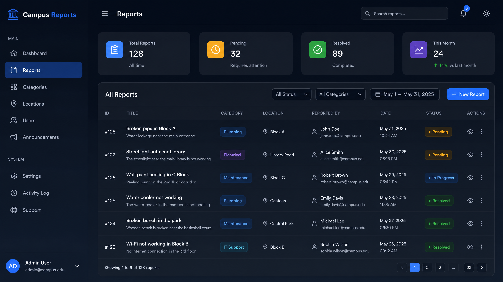
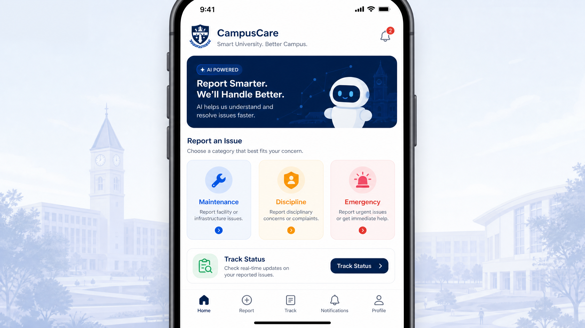
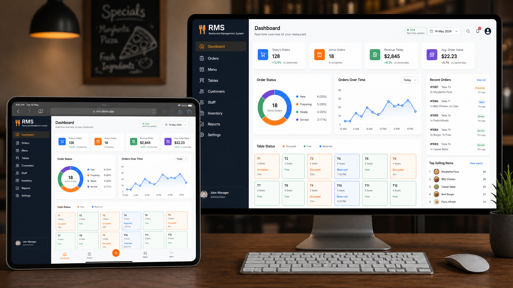
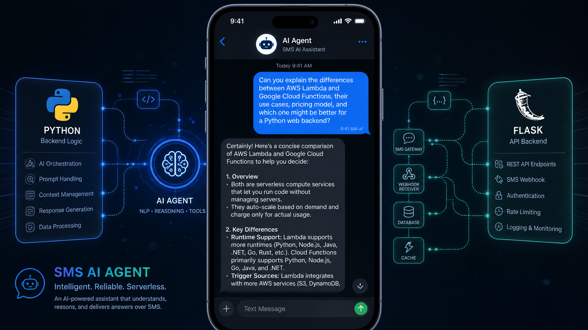
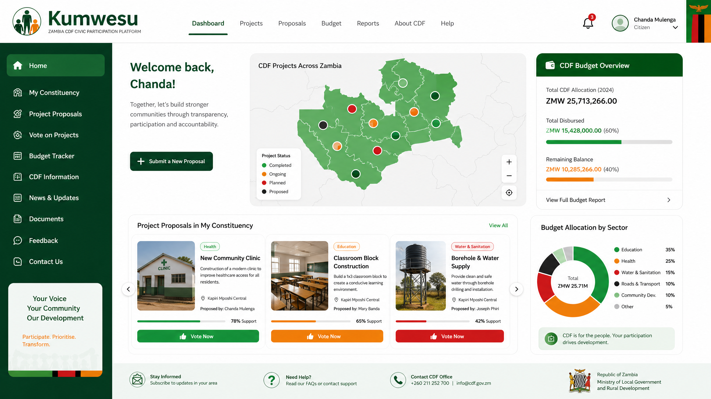
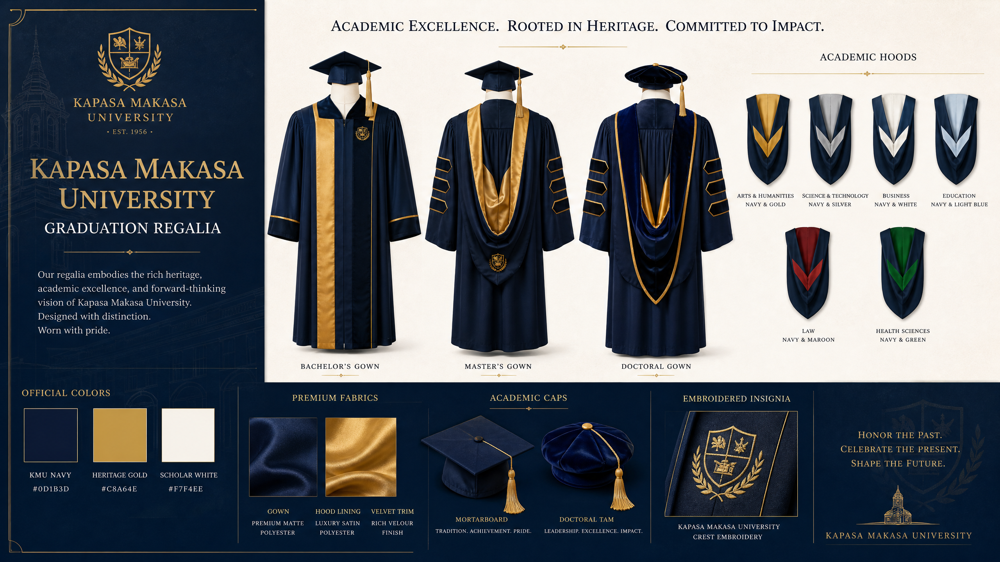

A showcase of selected projects spanning web design, branding, and full-stack development.

A comprehensive reporting platform for university students to report maintenance issues and campus incidents. Built as my 4th-year project with real-time status tracking, categorization, and admin dashboard for managing reports.

Smart reporting platform for university maintenance and discipline tracking. Built with AI-powered categorization to automatically classify issues and route them to appropriate departments. Features real-time tracking and intelligent analytics.

Progressive Web App for restaurant order management with real-time data visualization and analytics dashboards. Features table management, order tracking, revenue analytics with Chart.js, and works offline with service workers.

Python-based AI chatbot accessible via SMS, bringing AI capabilities to users without internet access through text messaging. Uses NLP for understanding queries and Flask for API backend. Demonstrates AI accessibility in resource-constrained environments.

A Zambian Constituency Development Fund (CDF) civic participation platform where citizens can register, submit community project proposals, vote on projects, view constituency budgets, and track project status. Promotes transparency and community engagement.

Official graduation regalia design for Kapasa Makasa University. Designed the complete academic regalia system including robes, hoods, and ceremonial elements that establish a lasting visual identity for the university's graduation ceremonies and institutional pride.
Real-world projects I've built and shipped.
A comprehensive reporting platform for university students to report maintenance issues and campus incidents. Built as my 4th-year project.
Smart reporting platform for university maintenance and discipline tracking. Built with AI-powered categorization using the MERN stack.
Progressive Web App for restaurant order management with real-time data visualization charts and analytics dashboards.
Python-based AI chatbot accessible via SMS, bringing AI capabilities to users without internet access through text messaging.
Designed the official graduation regalia for Kapasa Makasa University, creating a distinctive and memorable visual identity for academic ceremonies and institutional pride.
Let's turn your vision into reality. I'd love to hear about what you're building.
Start a Conversation →